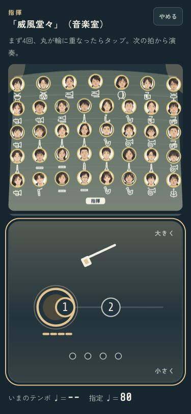
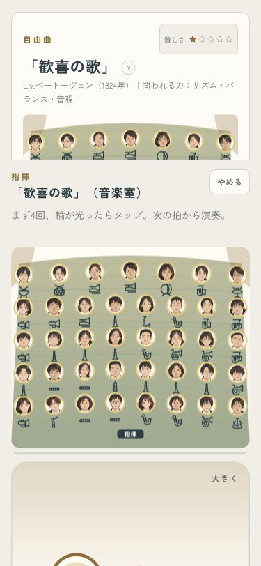
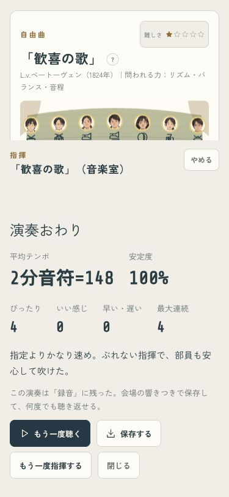

最初のタップ前 · 375px


2拍先から丸が近づき、輪へ重なった瞬間にタップ。最初のテンポ出しから、次に叩く拍が分かります。
開いたら、下の「指揮する」を押してください。確認専用の部なので、元のセーブには影響しません。

演出なし・短く・動きを減らす設定では、丸と棒は固定。4つの目印と輪の点灯で拍を伝えます。


判定や指揮の効きは維持。iPhoneへ更新して起動済みです。確認の詳細
codex/design · pushなし